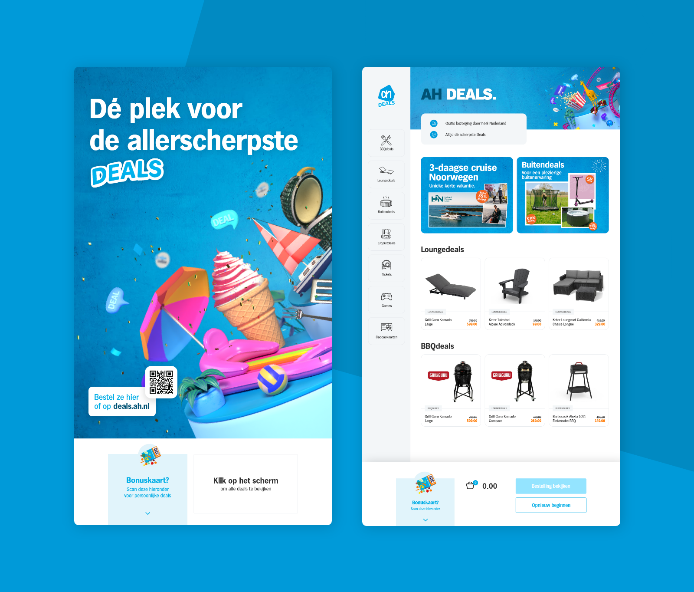

Albert Heijn Deals
Opdrachtgever Albert Heijn wilde onderzocht hebben hoe zij hun AH Deals verder kunnen digitaliseren en hoe de gehele customer journey hiervan verbeterd kan worden. Binnen dit project is uiteindelijk een digitale bestelzuil ontworpen die dit kan realiseren.

De opdracht
Albert Heijn verkoopt buiten boodschappen om ook veel non-food aanbiedingen via hun partner platform AH Deals. In de fysieke winkels van Albert Heijn staan vaak meerdere displays die deze tijdelijke acties showcasen, elke deal wordt ook nog eens afgedrukt op speciale folders. Aan het ontwerpen en printen van deze folders zitten echter hoge kosten verbonden, naast deze reden wilt de Albert Heijn ook vanuit het oog op duurzaamheid meer papier proberen te besparen in de winkels. De opdrachtgever heeft daarom gevraagd om te onderzoeken hoe zij hun partner deals verder kunnen digitaliseren en hiermee een stap kunnen zetten naar papierloze winkels. Hierbinnen stelt Albert Heijn de customer experience altijd voorop, daarom dient ook te worden onderzocht hoe deze oplossing eruit moet komen te zien in combinatie met een soepele klantervaring.
Het proces
Om uiteindelijk een passende oplossing te ontwerpen is het Design Thinking Framework gebruikt. Binnen de eerste fase van dit framework is begonnen met uitgebreid onderzoek: zo zijn observaties, user trips en interviews afgenomen met zowel klanten als winkelmedewerkers. Daaruit bleek dat de huidige displays nauwelijks opvallen, slecht geplaatst zijn, en dat veel klanten niet weten dat ze producten direct in de winkel kunnen afrekenen.
Op basis van deze inzichten ben ik ideeën gaan ontwikkelen. Waarna ik vervolgens verschillende iteraties van het ontwerp maakte - van een simpel schetsmodel (Lo-Fi), tot een steeds gedetailleerder prototype (Me-Fi en Hi-Fi). Tussendoor toetste ik het ontwerp regelmatig bij gebruikers met behulp van usability tests, zodat telkens verbeteringen aangebracht konden worden om het concept verder aan te scherpen.
Tijdens het ontwerpen hield ik steeds één vraag in mijn achterhoofd: op welk moment in de winkelroute staan klanten écht open voor aanbiedingen, en hoe maken we dat zo makkelijk mogelijk voor ze? Die aanpak zorgde ervoor dat het eindproduct niet alleen functioneel is, maar ook goed aansluit bij het natuurlijke gedrag van winkelbezoekers.
Het resultaat
Het eindproduct is een digitale bestelzuil, geïntegreerd met de website van de AH Deals, die klanten in staat stelt om eenvoudig het aanbod van AH Deals te bekijken in de winkel. Gebruikers kunnen hier hun bonuskaart scannen om gepersonaliseerde deals te zien die worden voorgesteld op basis van hun koopgedrag. Wanneer gebruikers een deal al direct willen afrekenen in de winkel is dit ook mogelijk. Dit afrekenproces is nu ontzettend makkelijk gemaakt, onder andere door hier ook slim gebruik te maken van de bonuskaart waarmee bijvoorbeeld gegevens van de klant snel overgenomen kunnen worden. Naast het ontwerp van de tool is ook geadviseerd over de optimale plaatsing van de zuil in de winkel, zodat deze zich op een logische plek binnen de customer journey bevindt.
 Bekijk volgend project